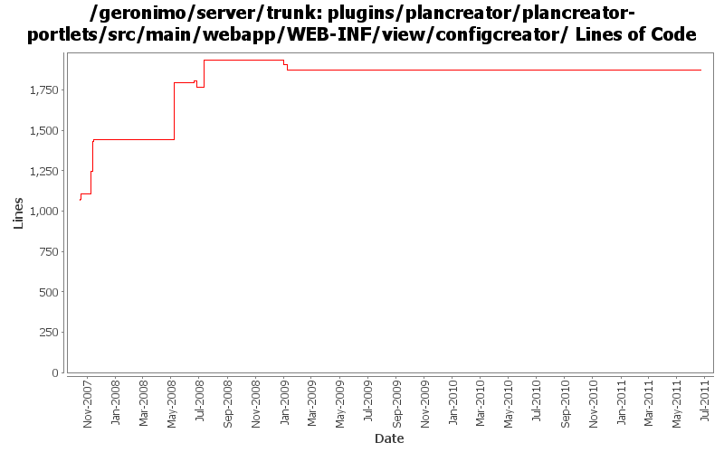

[root]/plugins/plancreator/plancreator-portlets/src/main/webapp/WEB-INF/view/configcreator

| Author | Changes | Lines of Code | Lines per Change |
|---|---|---|---|
| Totals | 50 (100.0%) | 1458 (100.0%) | 29.1 |
| shivahr | 26 (52.0%) | 1128 (77.4%) | 43.3 |
| dwoods | 19 (38.0%) | 313 (21.5%) | 16.4 |
| xuhaihong | 3 (6.0%) | 11 (0.8%) | 3.6 |
| genspring | 1 (2.0%) | 5 (0.3%) | 5.0 |
| jbohn | 1 (2.0%) | 1 (0.1%) | 1.0 |
GERONIMO-5674 Dojo related improvement. Patch from Xiao Yi to replace the full dojo with a customized dojo.
1, DojoHowToCompress/**/* files are the build script to build geronimo customized dojo.
2, dojo/**/* files are the customized dojo files for geronimo.
3, dojo-tomcat and dojo-jetty modules are removed.
4, customized dojo files are put into console-portal-driver webapp so that other jsp can reference the dojo
files with /console/dojo/xxx
5, also updated all dojo references in all jsps to the new dojo location.
5 lines of code changed in 1 file:
GERONIMO-4776 the view of step 3 of plan-create guide countain some demonstration mistakes (Patch from Siqi Du)
8 lines of code changed in 1 file:
GERONIMO-4667 PlanCreator have some spelling errors in pages (Patch from Rex Wang)
3 lines of code changed in 2 files:
a little more form cleanup
1 lines of code changed in 1 file:
GERONIMO-4484 Extraction, localization and display of messages generated in portlets. Applied common-message-openejb.patch, common-message-activemq.patch, common-message-debugviews.patch, common-message-plancreator.patch and common-message-sysdb.patch from Gang Yin. Also updated 2 console-testsuite DB tests to match modified message strings.
7 lines of code changed in 3 files:
GERONIMO-4474 Pull out the text in the JSP files to resource bundle files. Patches provided by Gang Yin.
205 lines of code changed in 7 files:
GERONIMO-4081 Accessibility issue: Webking scan errors against 'Check Web Accessibility(Section 508)' rules. Thanks Ivan for all of the patches.
20 lines of code changed in 1 file:
GERONIMO-4081 Accessibility issue: Webking scan errors against 'Check Web Accessibility(Section 508)'
81 lines of code changed in 8 files:
GERONIMO-4146 Handle Security in EAR PlanCreator. Thanks to Shrey Banga for the patch.
188 lines of code changed in 1 file:
GERONIMO-4147 EAR PlanCreator fix for Internet Explorer. Thanks to Shrey Banga for the patch.
3 lines of code changed in 1 file:
GERONIMO-4158 Plan Creator attempts to load old widget files after dijit migration. Thanks to Joseph Leong for capturing this.
0 lines of code changed in 1 file:
GERONIMO-4133 Handle dependencies in EAR PlanCreator. Thanks to Shrey Banga for the patch.
99 lines of code changed in 1 file:
GERONIMO-3433 - Plan Creator for geronimo-application.xml - first of many patches.
392 lines of code changed in 7 files:
GERONIMO-3430 Enhance 'Create Plan' portlet to auto handle Web Service references in a web-app
79 lines of code changed in 1 file:
GERONIMO-3430 Enhance 'Create Plan' portlet to auto handle Web Service references in a web-app
183 lines of code changed in 1 file:
GERONIMO-3429 Enhance security page of 'Create Plan' portlet to support addition of run-as-subject, default-subject, credential-store.
141 lines of code changed in 1 file:
GERONIMO-3431 Enhance 'Create Plan' portlet to auto handle references to JavaMail resources in a web-app
37 lines of code changed in 1 file:
GERONIMO-3428 Updating user documentation in "Create Plan" portlet's jsp files
+ Minor bug fixes
+ Beautify 'Resolve References' page.
6 lines of code changed in 9 files:
GERONIMO-3428 Updating user documentation in "Create Plan" portlet's jsp files by reusing the documentation in http://cwiki.apache.org/GMOxDOC12/deployment-plans.html.
0 lines of code changed in 2 files: